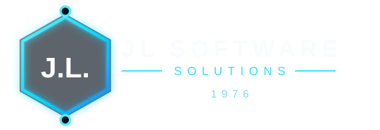
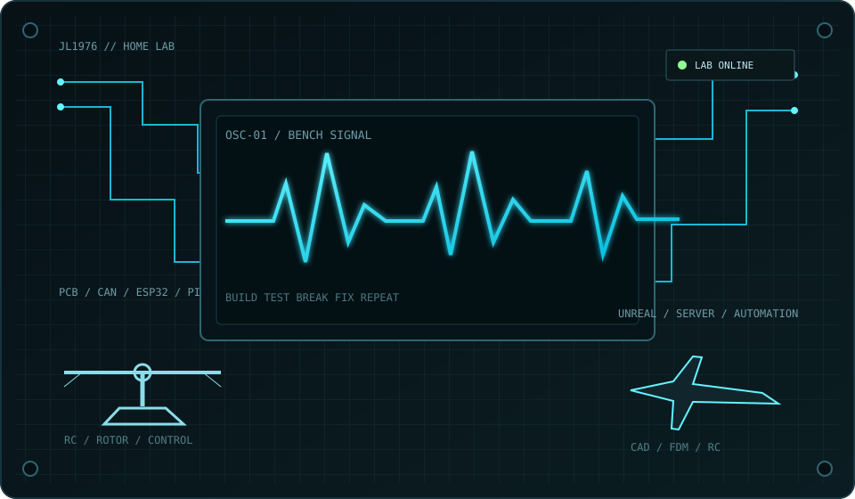

Grow-Central
Raspberry Pi, ESP32, Sensorik, HomeKit, Cloud-Link und lokale Steuerung.
ÖFFNEN →
135ERHELI.DE 135ER CREWPROJEKTE. TECHNIK. VISION.
RAW. CITY. BUILD.
Software, RC, 3D-Druck, Embedded, Fahrzeuge, Games und alles dazwischen. Keine Stock-Show. Echte Projekte, echte Hardware, echte Baustellen.

01 / PROJECT INDEX
Raspberry Pi, ESP32, Sensorik, HomeKit, Cloud-Link und lokale Steuerung.
ÖFFNEN →Orca-basierter 3D-Druck-Workflow, Geräte, Collector, Profile und Live-Daten.
GITHUB →Berlin, Rathaus Spandau, reale Geodaten, UE5/Lyra und eigene 2030-Playermodels.
GITHUB →FDM-druckbares RC-Modell mit Klappflügeln, 4S-Antrieb und eigener Konstruktion.
GITHUB →ESP32-S3 CAN-Gateway und Live-Dashboard für den VW Touran 1T3.
Controller-Hardware, RC-Heli, MCU und der Ursprung von 135erHeli.
Diagnose, BMS-Kommunikation, Raspberry Pi und Desktop-Tools.
Werkstattplanung, Personal, ERP und reale Betriebsabläufe.
Asterisk, SIP, Rufgruppen, IVR und eigene Telefonie-Infrastruktur.
Gameserver-Plattform, CS2, eigenes Frontend und Live-Status.
Web-Relaunch, Spot-Repair, GIMP-Master und mobil optimierte Präsentation.
02 / EQUIPMENT & SETUP
ESP32, Raspberry Pi, Sensorik, CAN, BMS, GPIO.
FDM, Bambu Lab P2S, FreeCAD, Fusion-Legacy, Blender.
Python, Web, iOS, Android, Debian, Automatisierung.
UE5, Lyra, GIS, 3D-Stadtmodelle, Game-Tooling.
03 / STORY & CREW
135erHeli.de ist die öffentliche Werkbank rund um JL1976. Kein Agentur-Portfolio und keine erfundene Case-Study. Hier landen Projekte, die wirklich auf Rechnern, Pis, Fahrzeugen, Druckern und Werkbänken laufen.